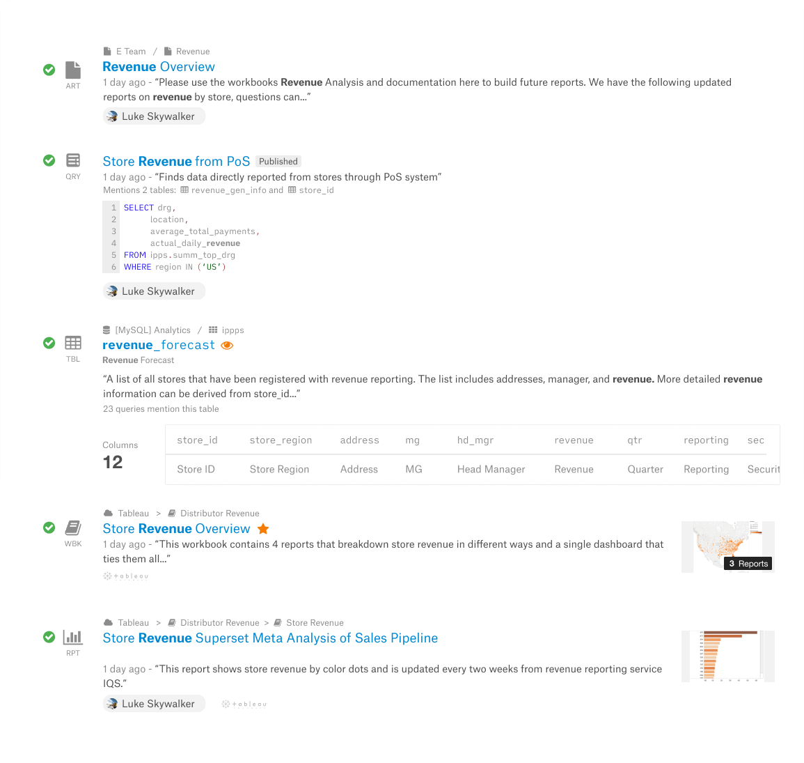

Alation
Helping analysts quickly understand data objects in search
What is Alation?
Alation reduces time-to-insight for customers like American Express, Twitter, and Pfizer through a self-service solution where data analysts can more efficiently find, understand, and trust their data.
Timeline
Role
As the designer on the project, I was given ownership of the research, exploration, and design of the search results, while my partner Megan Matsumoto, led the research, exploration, and design of the search paradigm and filters. As a team with no dedicated UX researchers, we also led our own user research sessions.
Problem
Search is the first point of contact many users have with the product. Through our Client Success Managers, we heard that not only was there confusion with the inconsistency of the search experience, it also was challenging to use for less-technical users.
There was a lot of buy-in from executives to do a thorough redesign of the search experience because it would support expanding the product so that less-technical users can get value from it, thus supporting the OKR of expanding licensed seats. So the product design team kicked off the ambitious project to reimagine the whole search experience, from how search lives within the data catalog interface to how search results are displayed to how users filter results.
User need: Data users want to use search to either find an exact object they know exists, or to browse for objects that relate to an area they are investigating.

Understanding the complexity
Megan and I started with a set of exploratory studies to understand what people felt about search:

- Megan distributed an internal survey to understand how different stakeholders within the company – engineers, sales, product marketers – felt about search
- I conducted an audit and documentation of all the types of objects search surfaces to see what are all the attributes that people could be searching or filtering by
- I sat with Account Executives to see how we as a company talk about the data catalog and how customers describe their needs
- I worked with Andrea Levy from our Data Science team to look at how search is used by customers in its current state
- Megan looked at search-related feedback from our in-product NPS survey
Sitting with users
Because our redesign targets people who were differ from our existing customer base, Megan and I enlisted Respondent to find people who could match this profile. Megan set up the Respondent and filtered for people who regularly use data to make business decisions and use tools like Excel but not SQL.
Megan and I created a script for the study, and I took turns with Megan to lead these 45-minute long sessions. Part of the session was dedicated for them to try our existing search to see what issues arise.
Divergent exploration
With the breadth of the questions in mind, I explored several different ways to present the possible patient answers in an interactive manner, each with benefits and drawbacks. The goal of this exploration is for everyone on the team to be able to grasp the tradeoffs of these vastly different paradigms, both in engineering and how they fit into the medical team workflow.


Initial playground
This initial exploration prioritizes both skimming and in-depth exploration of search results via an accordion paradigm. I also explored subtly coloring a search result to denote object type.
Levels of information
One of the ideas I took from the initial exploration is that each search result can be displayed on a spectrum from quite minimally to quite in-depth. I did initial design exploration around the three levels of information detail for the most commonly searched for objects. This allowed Megan and I to see how space efficiency is balanced with showing enough detail to help people understand an object.


Finding natural information hierarchy
The three levels of detail were based on a lot of assumption. In order to understand what users actually want when scanning search results, I met with users to play the dollar game.
I designed 'ultimate result cards' for several object types stuffed with every searchable attribute imaginable. Then I asked users, "Imagine I give you $10 to spend on all the pieces of information in this result card, how would you spend it?"
After running these tests with multiple internal users, both technical and non-technical, I was able to find some general patterns on how information should be prioritized.
Designing for consistency and scannability
Through my testing with internal users, I also received unsolicited feedback on how information should be placed spatially, which pointed me to thinking harder about how the information should be grouped and placed within the result card.
- There are a few different types of information conveyed in each search result card. Some information relate only to the object, some information relate to the organization's relationship with the object, and other information relate to the user's own relationship with the object. These need to be integrated in a way that gives the object its aggregate meaning.
- The core web search only indexes one type of information, the web page. However, a data catalog indexes a wide range of object types, from tables to columns to reports to queries. These object types are often intermixed in search results because a query may rank as prominently in a search for 'oct 2020 revenue' as a table or report. Thus in order to help users make sense of search results, object types and difference between them need to be easily understandable.
- Since our software is designed for desktop, we have the opportunity to decrease noise by holding back some information to show on hover.
Testing alternatives in result card detail
Narrowing down: a more subtle design
Through several rounds of testing, I found that while a large object type icon was good for learnability, it overwhelmed the information hierarchy and thus reduced efficiency in browsing the results. Instead, I found that users really understood objects when they are represented with the object's salient characteristics. For example, a table is more easily recognized as a table when users are able to recognize the column structure.

This new table preview component not only made the popular table object more tangible to new users, but it allowed an added layer of depth in seeing if the table would be helpful. This new component went through several rounds of iteration to find the most efficient display and to round out edge cases like tables with thousands of columns.
Handover
Megan and I periodically combined our work into a clickable prototype to test with users. Thus our projects moved in tandem. Toward the end of the project and the end of my internship, I documented the functionality of interactive elements of the search results and the table preview. We also thought about metrics by which we would evaluate the success of our designs.
Conclusion
With 2 months of iterating and testing, we imagined and specced a search that not only was easier to approach for our new customers but also improved the value of the data catalog to power users. As this feature is rolled out, the team is closely tracking task success rate, engagement, and NPS to find places for further improvement.
Through this project, Megan and I were able to solve customer pain points and expand Alation to a new set of less-technical users, allowing Alation to expand its market. By taking ownership of the design of the search results, I helped the product design team meet the tight deadlines and accelerated the engineering team's ability to estimate and plan the next quarter.

During my time working with Andrew, I immediately noticed his uncanny ability to ask precisely the right questions and welcome design challenges right out of the gate. He’s unfazed by tough UX problems, and approaches solutions with a high curiosity and ability to execute. I would hire Andrew in a heartbeat.
 Shemoel R.
Principal Product Designer @ Curology
Shemoel R.
Principal Product Designer @ Curology
One of the traits I noticed the most was his attention to detail and drive to push projects forward. I could trust that when given a task, not only would he complete it, but would go beyond and excel at whatever it was.
Ben K.
Senior Product Designer @ Curology